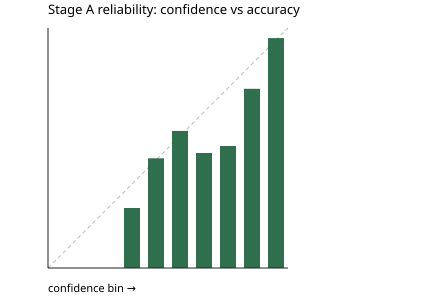

Per class
| Category | F1 | Support |
|---|
Language and channel
Language
| Language | n | Accuracy | Macro-F1 |
|---|
Channel
| Channel | n | Accuracy | Macro-F1 |
|---|
Confusion matrix
Reliability

Train-only models scored on the 800 validation tickets. Fusion weights were fit on out-of-fold predictions. This is the number to quote.
| Category | F1 | Support |
|---|
| Language | n | Accuracy | Macro-F1 |
|---|
| Channel | n | Accuracy | Macro-F1 |
|---|
